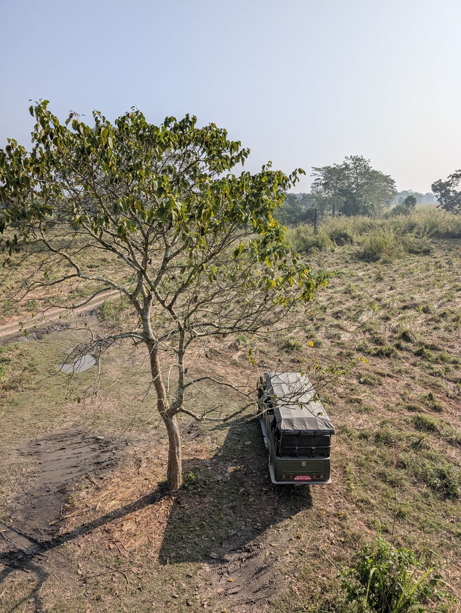
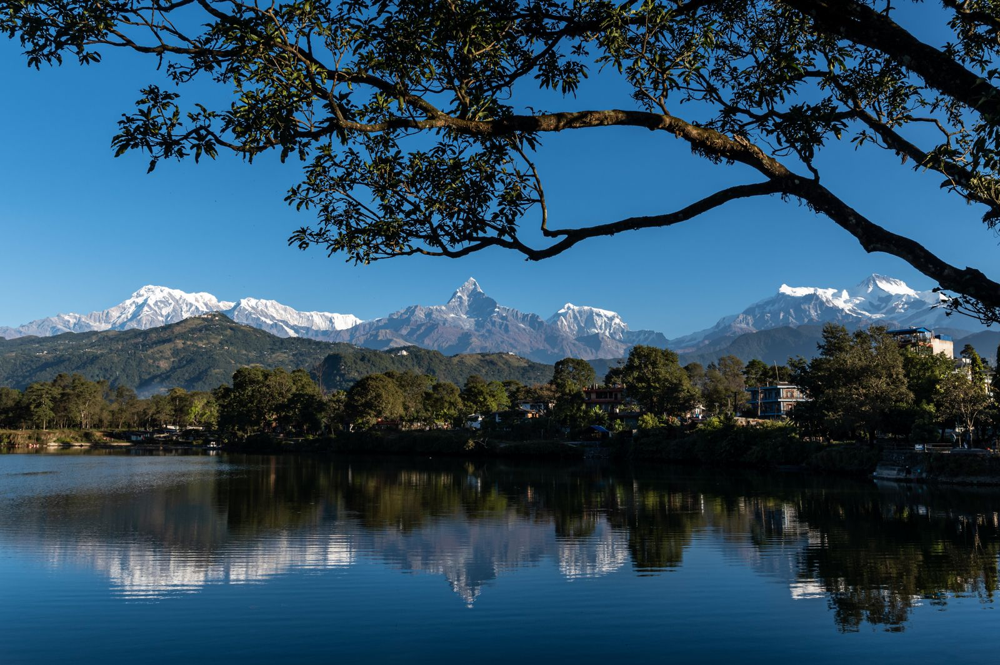
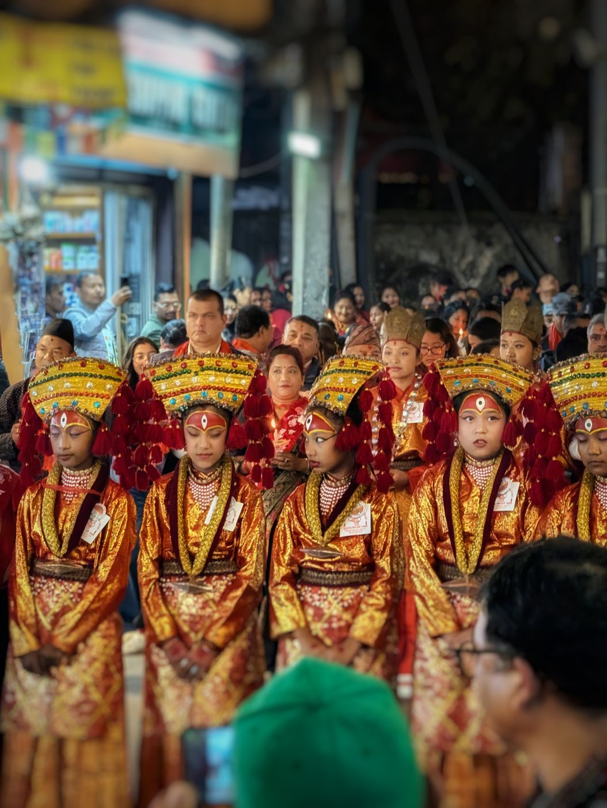
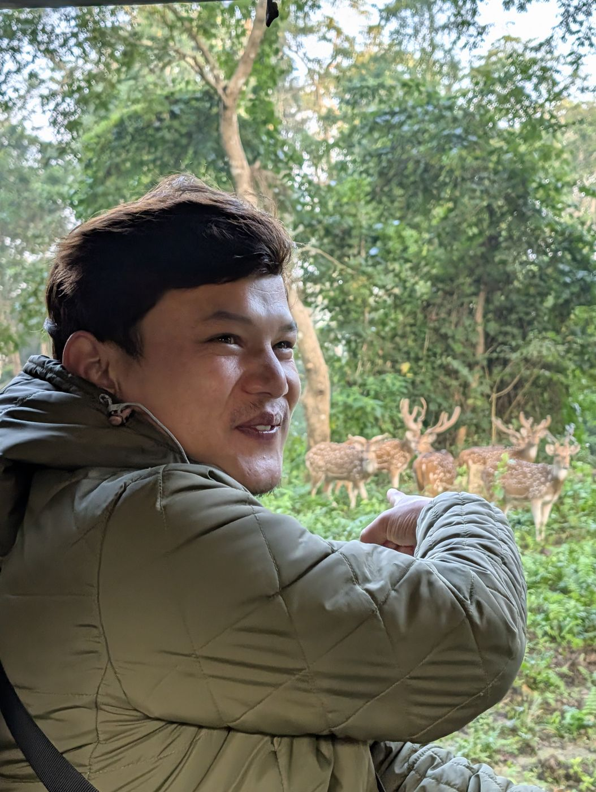
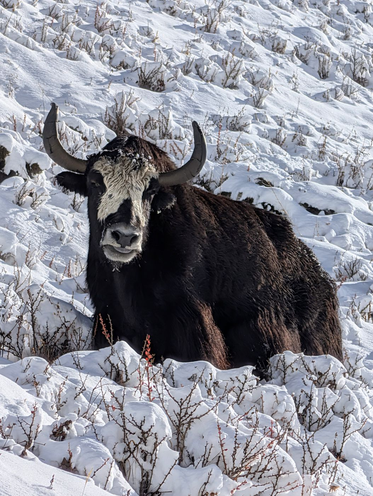
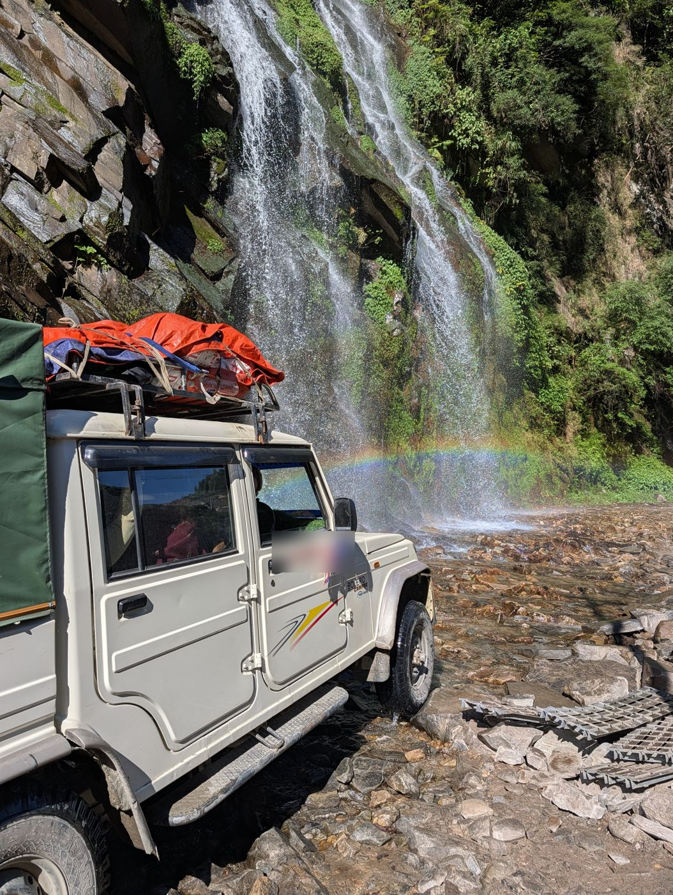
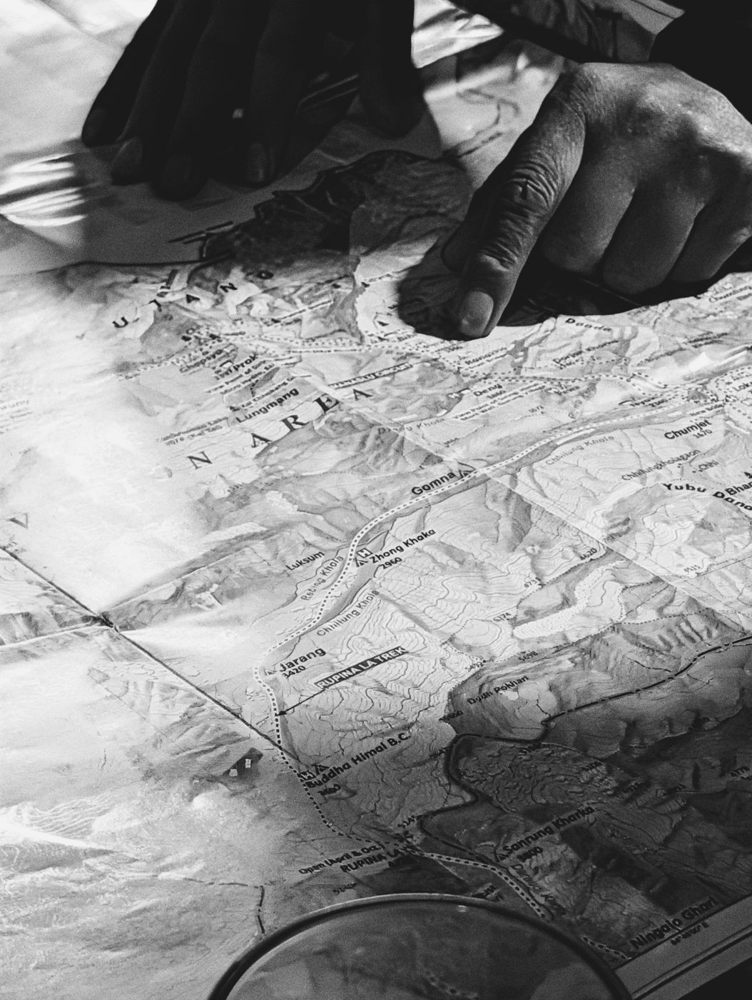

Experience that shows
Years of seasons on these trails means knowing which bridge washes out, which lodge has the warm dining room and where the best view is at sunrise.
Licensed trekking guide · Nepal
Over 8 years guiding the Annapurna, Manaslu and Everest Base Camp trails. Private and small-group treks, planned around your pace, plus safaris in Chitwan and easy lakeside days in Pokhara.
Years of seasons on these trails means knowing which bridge washes out, which lodge has the warm dining room and where the best view is at sunrise.
Sensible acclimatization days, daily oxygen checks above 3,000 m and no hesitation to turn around. The mountain will be there next year.
Private and small-group trips. Fast walkers, slow walkers, photographers and first-timers all welcome. The itinerary bends to you.
Monasteries, village homes and the stories behind them. Expect more cups of tea with locals than you planned for.
Typical lengths below. Every trip is tailored, so ask about shorter versions, side trips and rest days.
A quieter loop around the world's eighth-highest mountain. Gorges of the Budhi Gandaki, Tibetan Buddhist villages like Samagaon, and the big day over Larkya La.
Needs a licensed guide and special permits. Ganesh handles the paperwork.
Fly into Lukla, walk through Namche Bazaar and Tengboche Monastery, and stand under Everest itself. Sunrise from Kala Patthar is the reward.
Lukla flights are weather dependent. Build in a spare day or two.
From green rice terraces to high desert in Manang, over Thorong La and down to the pilgrimage town of Muktinath. The most varied trek in Nepal.
Into the Annapurna Sanctuary, ringed by peaks on every side. Or the Ghorepani Poon Hill loop: a few days, rhododendron forest and a famous sunrise.
Great for first-timers or a shorter holiday.
Add a few days before or after a trek, or make it the whole trip.

Nepal's first national park and home to the one-horned rhino. Safaris, guided jungle walks, dugout canoes on the Rapti River and Tharu village culture.

Sunrise over the Annapurnas from Sarangkot, a boat across Phewa Lake, a walk up to the World Peace Pagoda. The perfect recovery after a big trek.

Boudhanath stupa at dusk, the old squares of Patan and Bhaktapur, and the momo spots locals actually eat at.

Namaste, I'm Ganesh
For more than eight years I have guided trekkers through the Annapurna, Manaslu and Everest regions. I have done these routes in sun, snow and the odd landslide, and I still get excited every time the first big peak comes into view.
My job is simple: get you up safely, get you down happily, and make sure you understand the places you are walking through. I speak with you honestly about weather, altitude and trail conditions, even when the honest answer is "let's wait a day."
Off the trail, you will find me drinking too much milk tea and taking far too many photos. Follow along on Instagram.
A few moments from recent trips. More on Instagram.



Read honest reviews from past trekkers, or leave one after your trip.
October to November gives the clearest skies. March to May is the second season, with rhododendrons in bloom. December to February works for lower treks but high passes can close with snow. June to September is monsoon: wet, leeches and cloud, though Chitwan and Kathmandu are still possible.
If you can walk 5 to 7 hours a day for several days in a row, you can do most of these treks. Shorter options like Poon Hill suit almost anyone. Train with long walks and stairs before you come.
Every itinerary includes acclimatization days and gains height slowly. Ganesh checks how you are doing every day, including oxygen levels higher up, and will always choose descent over pushing on when symptoms appear.
Yes. Most treks need a national park or conservation area permit, and Manaslu needs a restricted area permit that can only be issued through a registered agency with a licensed guide. Ganesh arranges all of it.
Yes, and it must cover trekking at the altitude you are going to, including helicopter evacuation. Check the maximum altitude in your policy before you buy.
It depends on the route, group size, season and how much is included (porters, hotels, transport). Send your dates and ideas and you will get a clear, itemized quote.
Tell Ganesh when you are coming, how long you have and what you want to see. You will hear back with ideas and an honest quote.
WhatsApp: +977 976-7484083